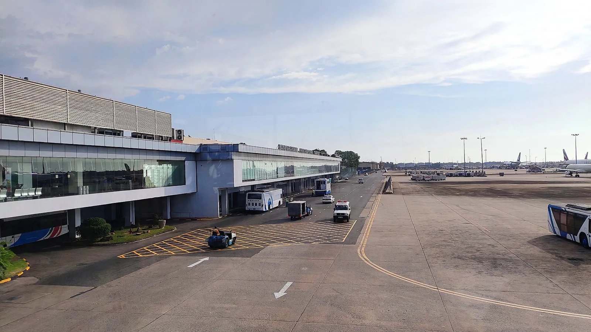
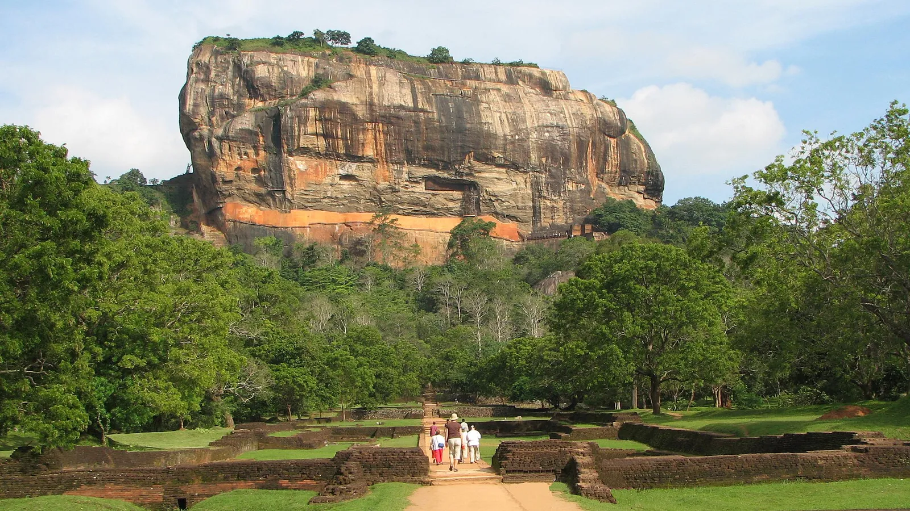
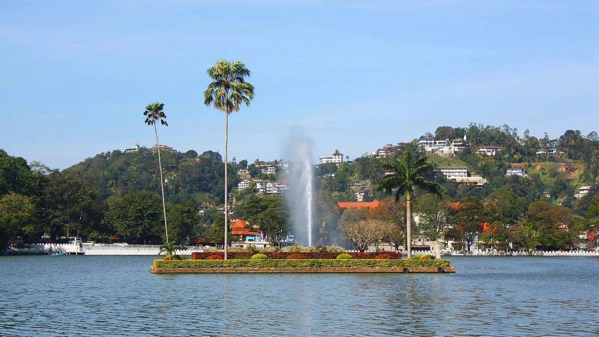
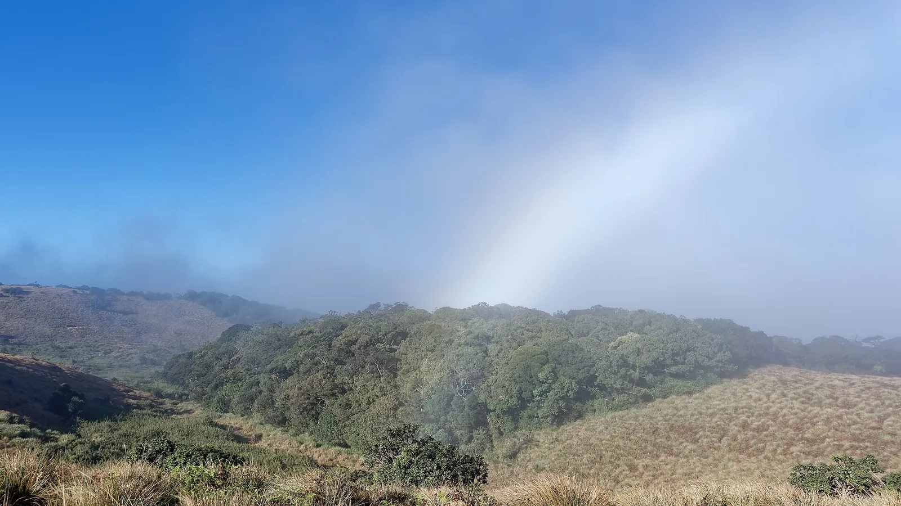
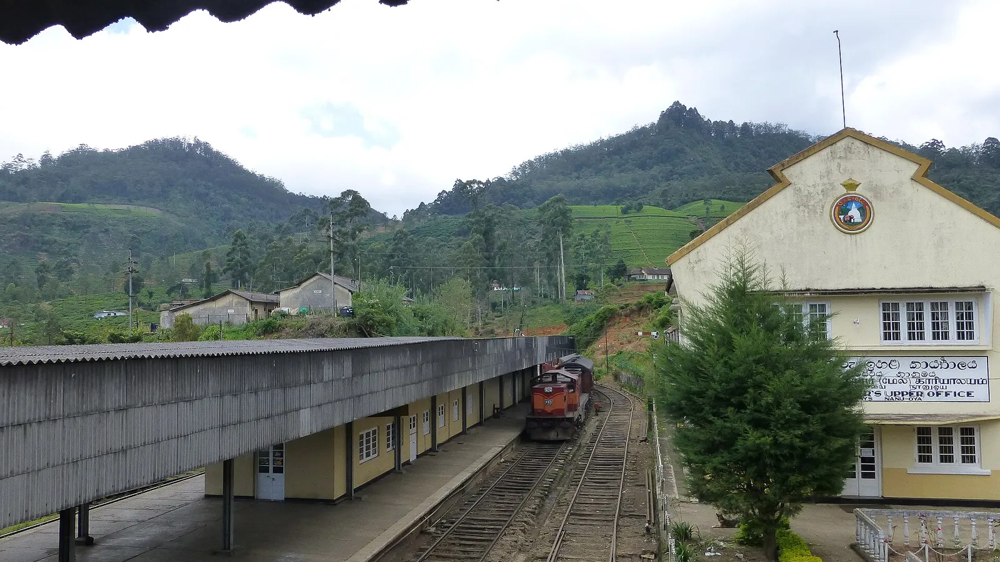
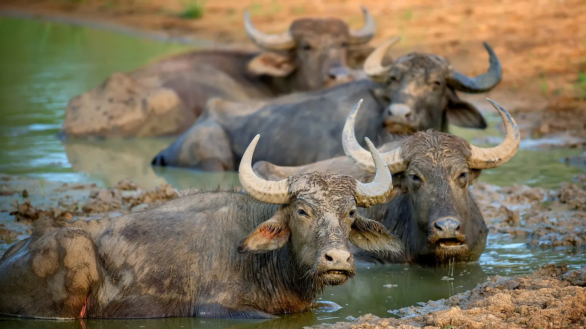
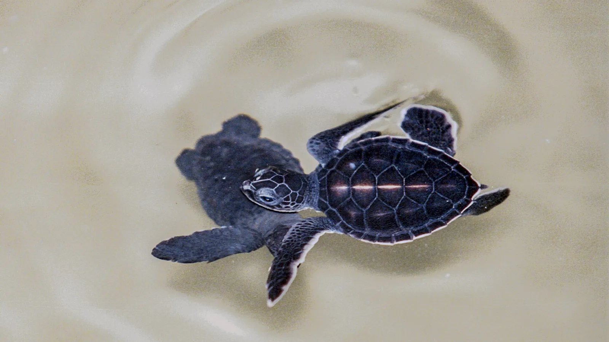
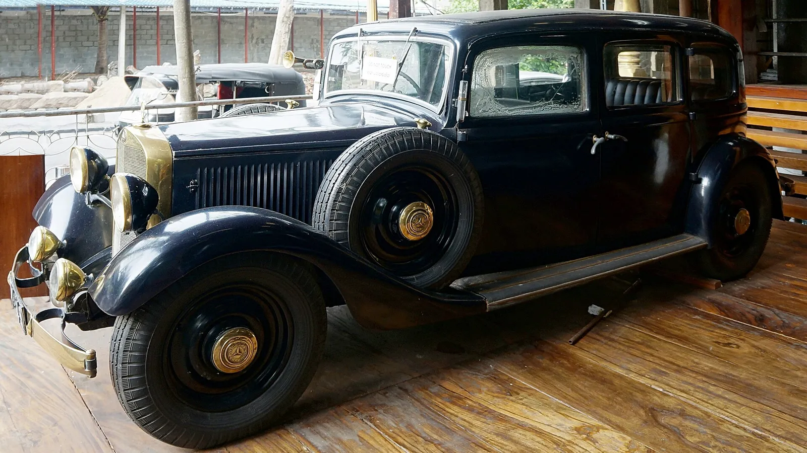
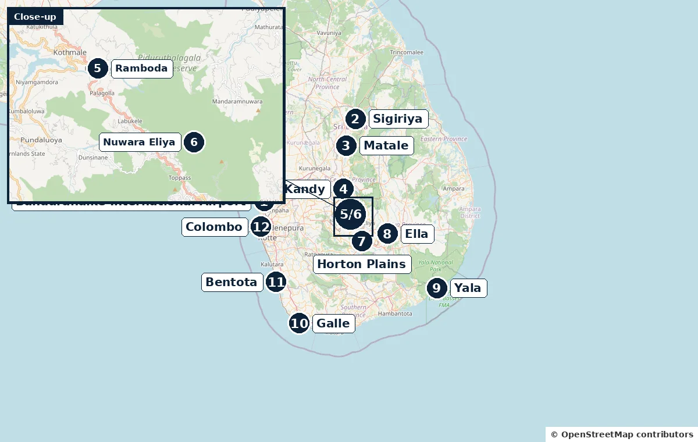

Sri Lanka's classic circuit: the rock fortress of Sigiriya, Kandy's Temple of the Tooth, two nights in the tea hills of Nuwara Eliya with Horton Plains, the drive down through Ella to a leopard safari in Yala, Galle's Dutch fort and two beach nights at Bentota with a turtle hatchery and a river safari. The original plan arrived in Sigiriya in the evening and left the next morning without climbing the rock, so we added a 07:00 climb on day 2. Yala National Park closes for about six weeks from September; in those months we switch to Udawalawe.
See it for yourself
Photos from the journey









Where you go
The journey on one map

Bandaranaike International AirportSigiriyaMataleKandyRambodaNuwara EliyaHorton PlainsEllaYalaGalleBentotaColombo
Day by day, in short
Daily travel brief
Distances are by road for the whole day. The full plan with timings comes with your detailed itinerary.
-
1
Arrive in Colombo and drive to Sigiriya
- Ask the driver to stop for king coconut water on the way.
-
2
Sigiriya rock at dawn, then Kandy
- Sigiriya rock fortress: hornets nest on the rock: keep quiet and avoid strong perfume.
- Sigiriya rock fortress: start by 07:00; it gets very hot by 10:00.
- Temple of the Sacred Tooth Relic: white or light clothing, shoulders and knees covered.
-
3
Ramboda and up to Nuwara Eliya
Sri Baktha Hanuman Temple Ramboda Falls
- Nuwara Eliya is cool; a warm layer for the evening.
-
4
Horton Plains and World's End
- Horton Plains National Park: go early: mist usually hides the World's End view after about 10:00.
- World's End and Baker's Falls: there are no railings at World's End.
-
5
Ella and Ravana Falls to Yala
- Optional train from Nanu Oya to Ella: reserved seats sell out weeks ahead.
- Ella is a good stop for lunch.
-
6
Yala safari, Galle Fort and on to Bentota
- Jeep safari in Yala: stay seated in the jeep and keep quiet near animals.
- Jeep safari in Yala: yala closes for about six weeks from early September.
-
7
Turtles, the Madu River and the beach
- Kosgoda turtle hatchery: do not handle hatchlings unless the staff ask you to.
- Bentota beach and water sports: swim only where lifeguards are posted; currents are strong from May to October.
-
8
To Colombo and Galle Face Green
-
9
Fly home from Colombo
- Be at the airport 3 hours before an international flight.
Local know-how
Travel hacks from our desk
Hotel deposit
Use a credit card for the deposit or pre-authorisation at check-in, never a forex or debit card. Forex cards cannot hold funds, many hotels refuse them, and a credit-card hold is released faster.
Rupees
Sri Lankan rupees (LKR). Cards work in hotels and big shops; carry cash for temples, tuk-tuks and roadside stalls. Indian rupees are not accepted.
Temples
Remove shoes and hats, cover shoulders and knees, and never pose for a photo with your back to a Buddha statue. White clothing is preferred at the Temple of the Tooth. Some Hindu kovils ask men to remove shirts.
Hill country
Nuwara Eliya is about 15°C and can drop to 5°C at night. Pack a warm layer and a rain jacket.
When to go
Best time to visit for this journey
January to March.
December to April, when the hills and the south-west coast are dry and Yala's leopards are easiest to see.
The package
What's included
Included
- 8 nights with breakfast; dinner in Sigiriya, Kandy, Nuwara Eliya and Yala
- Private air-conditioned car with English-speaking driver-guide
- Yala safari jeep
- Horton Plains jeep
- Spice garden and gem gallery visits
- 24/7 support from Blue Diamond Voyage
Not included
- International flights
- Sri Lanka ETA
- Entry fees (Sigiriya, Temple of the Tooth, park fees)
- Turtle hatchery and Madu River boat
- Ella train tickets
- Lunches
- Tips
- Travel insurance
The detailed itinerary
Some journeys are planned. Ours are crafted.
The full 9-day plan is ready: hour-by-hour timings, drive times, temple dress codes, food for your diet and a route map for every day. Tell us your dates and your city, and we'll send it to you on WhatsApp, shaped around you.
- Hour-by-hour timings
- A route map for every day
- Hotel and room details
- Visa and entry steps
- Vegetarian and Jain dining
24/7 travel desk+91 97148 59797+91 98242 21400
Photo and map credits
- Bandaranaike International Airport: ANKAN, CC BY-SA 4.0, via Wikimedia Commons
- Sigiriya: Bernard Gagnon, CC BY-SA 3.0, via Wikimedia Commons
- Kandy Lake: AntanO, CC BY-SA 4.0, via Wikimedia Commons
- Horton Plains National Park: Jakub Hałun, CC BY 4.0, via Wikimedia Commons
- Nanu Oya: Ji-Elle, CC BY-SA 3.0, via Wikimedia Commons
- Yala National Park: Byrdyak, CC BY-SA 4.0, via Wikimedia Commons
- Kosgoda Turtle Hatchery: Jerzy Strzelecki, CC BY-SA 3.0, via Wikimedia Commons
- Gangaramaya Temple: Pierre André Leclercq, CC BY-SA 4.0, via Wikimedia Commons
- Bandaranaike International Airport: ANKAN, CC BY-SA 4.0, via Wikimedia Commons
- Maps: © OpenStreetMap contributors; road routes by OSRM.